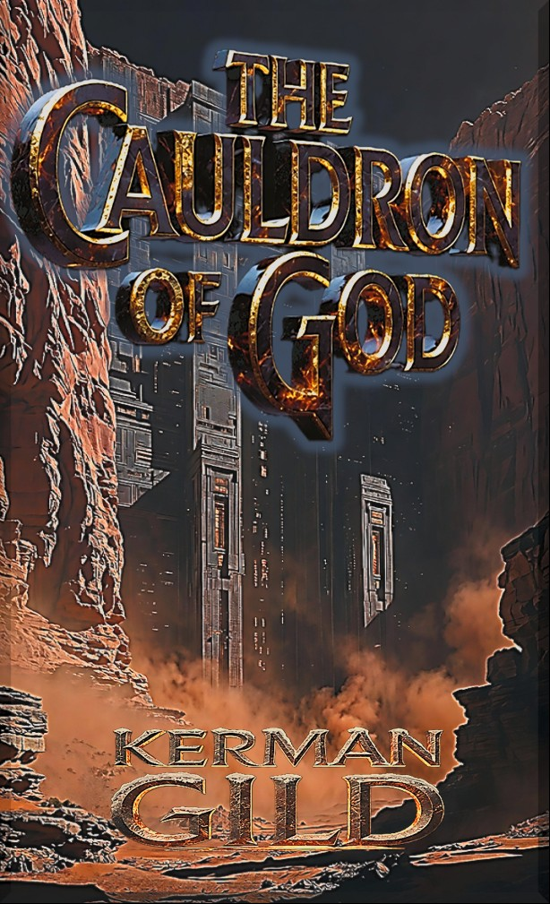

What was buried beneath the ice was never meant to be found.
The war moves underground.
Author: Kerman Gild
The Nephilim Chronicles — Book Two
Book 2 of The Nephilim Chronicles
"And again the Lord said to Raphael: 'Bind Azazel hand and foot, and cast him into the darkness: and make an opening in the desert which is in Dudael, and cast him therein.'"
— 1 Enoch 10:4
What was sealed before the Flood was never meant to be opened again.
The war moves underground. Two kilometres beneath Antarctic ice, something five thousand years old is waking up.
Cian mac Morna has never lost a war. He has never descended into a Watcher-era prison with a depleted sword and a finite clock. Until now.
Seven weeks after the Cydonian steles unmade themselves on Mars, the team is still alive. The Two Witnesses have appeared — Elijah and Enoch, the ancient prophets whose return was promised in fire. But something has shifted in the pattern.
The stele data isn't an archive. It's a ceremony. Twenty Watcher signatures woven into seven seconds of sound — a door that requires a specific key. And Naamah has been building that key for five thousand years.
Beneath the Ross Ice Shelf, her drilling operation has found what four millennia of searching could not locate: the acoustic resonance signature of Dudael. The Watcher-era prison complex beneath Antarctica where Raphael bound Azazel hand and foot and cast him into the darkness until the Day of Judgment.
The prison is responding. Naamah broke the first seal. She needs the ceremony to break the last.
The team must infiltrate the Vatican's most classified archive, recover the antediluvian cartographic record of Gadreel's domain, and descend into the most hostile environment on earth — a two-kilometre labyrinth of Watcher-era acoustic architecture, designed by beings who understood sound as a structural medium, filled with ward-craft that silences every supernatural asset Cian carries.
If Naamah opens the Dudael gate, the False Prophet walks free. The endgame of Revelation begins decades before any human institution is prepared to respond.
Cian mac Morna has survived twenty-six centuries of war. He has never faced an enemy who knows the architecture better than he does, in a location designed specifically to render him powerless, racing a clock that God has already wound.
He has also never stopped fighting. And Mo Chrá has never been silent for long.
THE CAULDRON OF GOD is the second volume in The Nephilim Chronicles — a five-book biblical apocalyptic thriller drawing on 1 Enoch, the Book of Jubilees, and the prophecies of Revelation. For readers of Frank Peretti, Joel C. Rosenberg, and anyone who ever wondered what really happened in the deep places of the earth.
The Guardian
Celtic warrior of the Fianna, 2,636 years old. Seven weeks' rest has not made him easier to argue with. Carrying a sword that nearly went silent after the anti-singularity and a responsibility that no prior century of hunting could have prepared him for, he descends into a Watcher prison armed with everything he has — which is starting to look like exactly enough.
The Archangel
Depleted after the anti-singularity event on Mars. His presence is thin, his voice strained. He can be heard but not as easily as before. The precise limits of what he can and cannot do in this condition are not things he volunteers. Cian has learned not to ask questions that don't yet need answers.
The Intelligence Operative
GCHQ-trained financial intelligence analyst. In the seven weeks since Austin, she has rebuilt Naamah's twelve-century money trail from a cold backup and found a thread that leads to the most controlled archive in the world. She has also been in every room where Cian works late and never quite left. Both of them are pretending not to notice.
The Descendant
McNeeve Space Systems is dissolved. The cover story held. Now Brennan leads what's left of the Eleven — reassembled as a covert operational unit — through something his aerospace training could not have predicted: the engineering assessment of a five-thousand-year-old subterranean labyrinth. He finds this, characteristically, more interesting than terrifying.
The Acoustic Specialist
The man who designed the rover array that started all of this is now the team's most critical asset. Marcus decoded something in Dragan's hilt that changed the tactical calculus of the Antarctic mission: Mo Chrá's autonomous counter-frequency. The enemy built dead zones to silence the sword. Marcus found the jammer's jammer.
The Protector
SAS veteran. Still here. Still responsible for turning engineers into people who can survive contested environments. The Antarctic environment does not change this calculus — it concentrates it. Madigan has been preparing for exactly this scenario for thirty years, even when he didn't know what the scenario was. He views this, as always, as a solvable problem.
The Strategist
The woman who dissolved a company in forty hours to protect civilians is now the operational brain of an expedition to Antarctica. She manages resupply chains through six shells, coordinates with the Josephite network through channels that don't officially exist, and is keeping a folder on her tablet that she still hasn't named. She bills by the hour. She has not submitted an invoice in seven weeks.
The Analyst
The youngest member of the Eleven. He has not slept a full night since the anti-singularity. In forty-nine days of failed signal analysis, he discovered that the Cydonian stele data was not compressed — it was woven. A ceremony. Twenty Watcher signatures singing a specific sequence. This insight unlocked everything that followed, and Chris is constitutionally incapable of stopping until he understands what they were singing.
The Twelve
New Zealand Tier-1 operators of the Order of St. Joseph — a sovereign military intelligence unit operating under Michael's jurisdictional mandate. Twelve operators deployed from Christchurch on a six-hour timeline, arriving when the exit calculus turned catastrophic. They do not ask for explanations. They understand that some wars are older than their operational doctrine, and they fight accordingly.
The Living Weapon
"My Heart" in ancient tongue. Depleted after the anti-singularity on Mars, her resonance reduced, her voice thin. But fourteen days after Austin she began to sing again — quietly, rebuilding. What Marcus decoded in Dragan's hilt revealed something even Mo Chrá may not have known: she contains a counter-frequency that makes the enemy's greatest tactical advantage obsolete. She is approximately pleased about this.
The Architect of Release
Daughter of Lamech. The Whore of Babylon. She survived the Flood through a transformation she did not plan and has spent five thousand years un-planning its consequences. Her drilling operation on the Ross Ice Shelf has been running for three years. She is two kilometres from what she has been seeking for forty centuries. The acoustic harmonic from Dudael has changed. The prison is responding. She is not patient by temperament — only by necessity. The necessity is ending.
The Imprisoned False Prophet
Nephilim son of Gadreel. The one who will be the False Prophet when the seals break. Bound hand and foot in the dark of Dudael since before the Flood, sustained by a judgment he cannot refute. His acoustic signature — the harmonic of something ancient and vast and wrong — has been seeping upward through nine hundred metres of ice. He is not awake. He is aware. And he has been listening to Naamah's drill for three years.
The last week of the antediluvian world. On the Cydonian terrace of Shemyaza's house, Naamah watches Noah's ark as the tectonic substrate fractures. The fountains of the deep open simultaneously along forty-three thousand miles of ocean ridge. A transformation she did not plan begins in her bones. She is going to die. She does not die.
The post-Flood world remakes itself around a single man with a city and a tower and a name. Naamah recognises what Nimrod is before the Watchers' Apkallu teachers do. She understands, watching the tower rise, that the infrastructure she lost to water can be rebuilt in stone — and that the rebuilt version is more durable than the original.
Austin, Texas. Seven weeks after the anti-singularity. Chris Guilder, the youngest member of the Eleven, emerges from forty-nine days of failed analysis with a revelation: the Cydonian stele data is not a compressed archive. It is a ceremony — twenty Watcher signatures woven together. Not a message. A door.
Two parallel operations. On the Ross Sea, aboard the research vessel Ashtoreth, Naamah's drilling operation detects a new harmonic from beneath the ice — a frequency that was not there yesterday. The prison is responding. In Austin, Miriam's financial intelligence work uncovers the thread that leads to the Vatican's deepest archive.
Vatican City. 0214 hours. Cian infiltrates the Sala della Memoria — the Vatican's most restricted archive — to recover a pre-Flood cartographic record. The antediluvian coordinates of Gadreel's domain, continental-drift-corrected: the precise location of Dudael beneath the Antarctic ice. Three guards. One sword. No margin.
A quiet chapter in a loud book. Cian and Miriam decode the Hebrew semantic precision beneath Genesis 10:8 — the word "gibbor" applied to Nimrod. The LXX distinction between dunatoi and gigas reshapes the taxonomy of the enemy they are pursuing. Liaigh speaks one line. The reader understands it. Cian does not, yet. This is load-bearing.
The enemy's counter-move is revealed. Armaros's warding technology — the resolving of enchantments, the binding of supernatural frequencies — has been weaponised into dead zones: acoustic architectures that silence Mo Chrá. The team learns that the facility they are descending into was built to make Cian's primary weapon irrelevant. Marcus starts thinking.
The Gehenna frequency. Mo Chrá deploys a resonance derived from the Valley of Hinnom — where divine judgment burned — and the effect on House Tamiel's operatives is not subtle. The operation costs something. There is a silence after that Liaigh does not explain. Miriam notices it. The team prepares for Antarctica.
In Celtic tradition, the Fianna were the war-band of Ireland — elite, oath-bound, unconventional. The team that has coalesced around Cian is not the team anyone planned. Three aerospace engineers, a financial intelligence operative, an SAS veteran, a corporate lawyer, a signals analyst, a depleted archangel, and a man with a sword who has been doing this for twenty-six centuries. This is the Fianna. They are, arguably, ready.
Marcus decodes the last data embedded in the hilt Dragan carried. What he finds is not a message. It is a capability — an autonomous counter-frequency Mo Chrá developed after processing the Armaros ward-craft in Chapter 5. The dead zones designed to silence her have a weakness approximately ninety seconds wide. The enemy does not know this. The reader does. This asymmetry is the pivot of the entire Antarctic operation.
The Antarctic expedition begins. Descent through two kilometres of Watcher-era ice. What the team finds at the entry point is not a vault or a cave system. It is architecture — deliberate, acoustically precise, built by beings who understood sound as structural material. Mo Chrá resonates with the construction in a way that is both navigation and warning.
Inside Dudael, the acoustic environment is catastrophic. The labyrinth was built to disorient — a multi-frequency maze that operates on every threshold of human perception simultaneously. Infrasonic pressure that creates irrational fear. Ultrasonic harmonics that disrupt spatial orientation. The team moves on Mo Chrá's frequency — the only reliable compass in a facility designed to make compasses meaningless.
The inner sanctum of Dudael. What the team finds is not merely an imprisoned Nephilim. The chamber contains the accumulated acoustic memory of every judgment Raphael pronounced here — the original binding, renewed across five millennia. Mo Chrá vibrates with recognition. What Cian hears in those echoes is not Watcher technology. It is something older. He does not yet know what to call it.
Naamah wins. Despite everything the team did correctly — the Vatican archive, the counter-harmonic, the tactical preparation — the seal breaks. The great theological weight of Book Two arrives: God permitted this. The release is not a failure of the plan; it is the plan. Azazel walks free into a world that has been waiting for his arrival since Revelation was written. Cian mac Morna, for the first time in twenty-six centuries, loses.
Extraction under fire. The NZ Josephite Tier-1 operators arrive from Christchurch — twelve operators against twenty-eight surface combatants deployed by House Tamiel from Punta Arenas. The fight out of Dudael is not clean. It is loud, costly, and dependent on Marcus's counter-harmonic at a moment when the tactical situation makes manual activation impossible. Mo Chrá adapts. She always adapts.
The dead zones meet the counter-harmonic at full tactical intensity. The enemy built Armaros-class wards specifically to silence Mo Chrá. Marcus built a key to those wards in a sub-basement in Austin. What happens when Mo Chrá deploys that key inside an active Armaros dead zone is not elegant. It is not proportional. It is the sound of Watcher-era architecture folding in on itself at creation frequency, and every operative in range understands, instantly, that they are witnessing something that has not happened since before the Flood.
Stewart Island, New Zealand. The safehouse. The team is alive. The mission failed. Azazel is free. The theological weight settles: this was not a human contingency that God failed to prevent. This was the prophetic sequence beginning to move at its appointed speed, and Cian's job was never to stop it — only to be faithfully present as it unfolded. He has been doing this for twenty-six centuries. He knows how to carry what cannot be changed. He does not like it.
Somewhere that memory still knows — the ancient garden that time did not reach — two figures stir. Elijah, the Tishbite. Enoch, the Scribe. The appointed hour they were preserved for has arrived. The 1,260 days begin. The Two Witnesses are about to return to a world that has no framework for them, carrying a testimony that will divide it in half. Cian mac Morna is their Guardian. He was born for this. He has been waiting for this. He is constitutionally incapable of following orders he disagrees with, and he has never disagreed with this one.